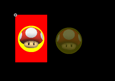

By default, if control pad designs need to be scaled from their native encoded sizes they use a bi-linear interpolation which can result in fuzzy graphics at times. The control designs can specify that nearest-neighbor re-sampling is used while stretching. This is handy for low-resolution graphics that will retain their intended look on high resolution devices. The default sizes of the control pad is 480 and 320. To exemplify the effects of nearest neighbor and bi-linear, I created a scheme that is 64 by 98 pixels. It has two frames that I will toggle. The second frame will use linear and the first will show nearest-neighbor. The single yellow button will be used to toggle between the views.
Below is the tiny scheme showing the single button in the center of the red background, and the button down-state off to the side. Both frames of the movie clip are identical, and I will set the sampling type in actionscript at runtime.

As you will see upon running the sample, the differences are very apparent.
The code is easy to decipher.
var sq:TinyScheme = new TinyScheme();
//the stage scaler is to set the size of the screen that the controls are designed for.
StageScaler.LONG = 98;
StageScaler.SHORT = 64;
//The values used for width and height when parsing the movie clip is the displayed size within the screen size.
//parse the scheme, and add the actual design orientation, width and height.
appScheme = BMControls.parseDynamicMovieClip(sq,false,false,'portrait', 64,98, AppDisplayObject.NEAREST);
// on the second frame, there is a object we will specify as linear to show the difference it makes.
appScheme.getChildByName("buttonB").sample = AppDisplayObject.LINEAR;
// Add controls to the list of schemes.
bm.session.registry.validateAndAddControlXML(appScheme.toString());
// GO!
bm.start();
For the button handler, we will send frame 2 over to the client.
protected function onButton(event:DeviceEvent):void
{
if( event.value.state=="up" )
{
_page= _page==1?2:1;
//page 2 is linear, page one is nearest.
bm.session.updateControlScheme(event.device, appScheme.pageToString(_page));
}
}